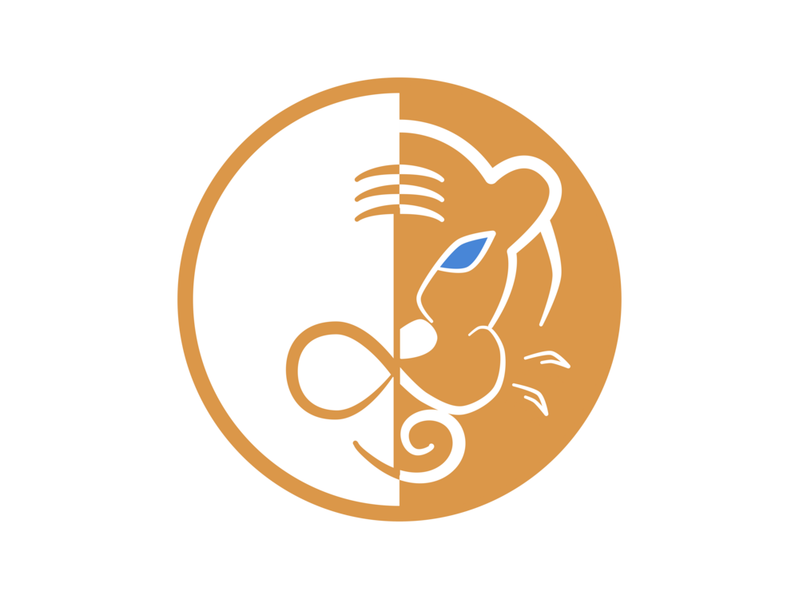
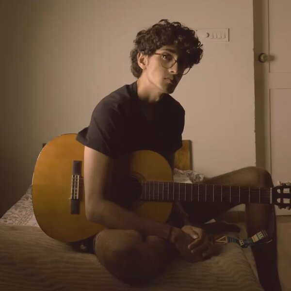

Lyfe — The Pizza Cut
Full concept-to-edit turnaround in about an hour, for the restaurant Lyfe — proof that quick work doesn't have to look quick.
Full piece · also on Drive
An independent video production house making ads, music videos and social content — shot, scored and cut in Bangalore.
A festive spot built around gift-giving for the printer brand Sato — the kind of full-scope brand ad we take on end to end, from concept to final cut.
First 30s shown — full 38s cut on DriveFull concept-to-edit turnaround in about an hour, for the restaurant Lyfe — proof that quick work doesn't have to look quick.
Full piece · also on DriveOngoing short-form content for Lyfe's Instagram feed, built to keep the page looking alive between bigger shoots.
Full piece · also on DriveWe got into this through music, not photography — so a cut usually starts with what it sounds like, and the picture catches up from there.
A push-in, a held wide shot, a cut on the beat — small decisions, but they're what separate a video from a moving photograph.
Sato's ad and Lyfe's reels don't look alike on purpose — each one's shaped around what that brand already looks and sounds like, not a house style we reuse.
Ads and social content are the regular work, but the same camera-and-sound setup carries over to formats that don't usually get this kind of attention — a podcast doesn't have to look like it was shot on a webcam, and a music video doesn't need a label budget to feel intentional.
Clean audio, steady angles, lighting that doesn't scream "ring light" — the stuff that makes a podcast watchable, not just listenable.
Fast cuts timed to the track, not just laid over it — built the same way we'd cut an ad, just louder.
